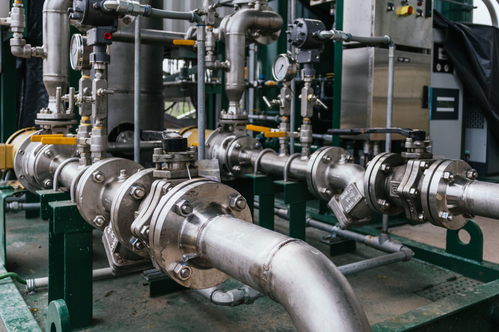
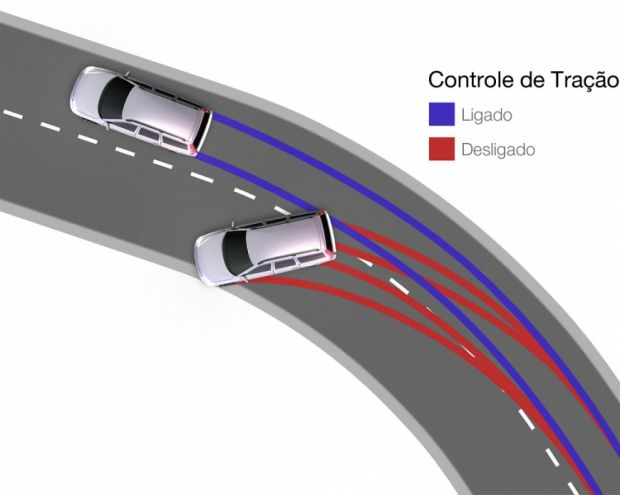
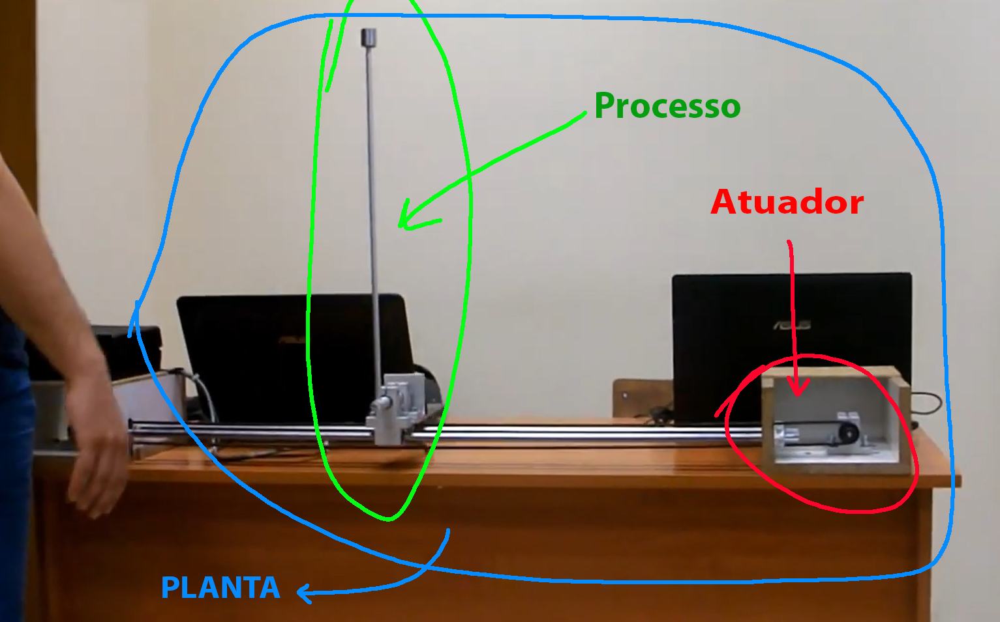

Aula 1:
Introdução à disciplina de Controle Digital
9 de agosto de 2024
O que é um sistema de controle?

Garantir desempenho e segurança!
Naves espaciais e aviões
 |
Ex: controle de atitude
Geração de energia
 |
Ex: controle de potência gerada
Indústria
|  |
Ex: controle de temperatura, vazão, nível...
Setor automotivo
|  Fonte: https://salaodocarro.com.br/como-funciona/controle-de-tracao.html |  |
Medicina e Biologia
 Fonte: IEEE Control Systems Magazine https://doi.org/10.1109/MCS.2017.2766322 |  Fonte: https://www.sare.org/publications/manage-insects-on-your-farm/beneficial-agents-on-the-farm/predators-2/ |
Tomada de decisão no Mercado financeiro e Economia
 |  |


Processo pode ser físico ou não-físico.
Pêndulo Invertido:
https://www.youtube.com/watch?v=4kIrcELC79o
Pêndulo Invertido:
https://www.youtube.com/watch?v=4kIrcELC79o

Pêndulo Invertido:
https://www.youtube.com/watch?v=4kIrcELC79o

Pêndulo Invertido:
https://www.youtube.com/watch?v=4kIrcELC79o

Self-balanced robot:
https://www.youtube.com/watch?v=38KVxZnBDZc
Self-balanced robot:
https://www.youtube.com/watch?v=38KVxZnBDZc

Self-balanced robot:
https://www.youtube.com/watch?v=38KVxZnBDZc

Self-balanced robot:
https://www.youtube.com/watch?v=38KVxZnBDZc

Self-balanced robot:
https://www.youtube.com/watch?v=38KVxZnBDZc

Self-balanced robot:
https://www.youtube.com/watch?v=38KVxZnBDZc